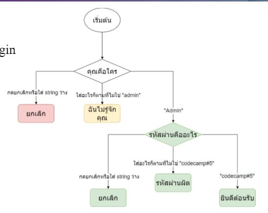

ให้เขียนระบบ login
- ให้ใช้ prompt ในการถามใครเป็นคน login
- ถ้าผู้ใช้กรอกว่า “Admin” ให้ใช้ prompt ถาม password
วิธีเช็ค Password
- ถ้า string นั้นเป็น “codecamp#5” ให้ alert “ยินดีต้อนรับ”
- ถ้า string เป็นอย่างอื่นให้ alert เป็น “Wrong password”
- ถ้าเป็น string ว่าง หรือ กด cancel ให้ alert ว่า “ยกเลิก”
- ถ้าผู้ใช้กรอกอย่างอื่นที่ไม่ใช่ “Admin” ให้ alert ว่า “ผมไม่รู้จักคุณ”
- ถ้าผู้ใช้กรอก input เป็น string ว่าง หรือกด Esc ให้ alert ว่า “ยกเลิก”

let username = prompt(`Please enter username:`, `Admin`);
if (username == `` || username == null) {
alert(`ยกเลิก`);
}
else if (username != `Admin`) {
alert(`ผมไม่รู้จักคุณ`);
}
else {
let password = prompt(`Please enter password:`);
if (password == `` || password == null) {
alert(`ยกเลิก`);
}
else if (password == `codecamp#5`) {
alert(`ยินดีต้อนรับ`);
}
else {
alert(`รหัสผ่านผิด`);
}
}